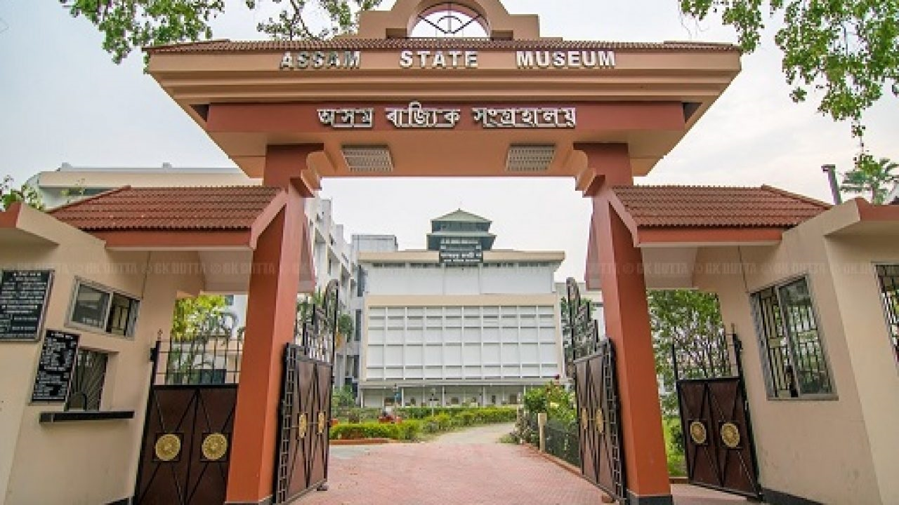

About
Guwahati (/ɡʊwɑːˈhɑːti/; formerly known as Gauhati) is the largest city in the Indian state of Assam and also the largest metropolis in the northeastern India. A major riverine port city along with hills is one of the fastest growing cities in India, Guwahati is situated on the south bank of the Brahmaputra.The ancient cities of Pragjyotishpura and Durjaya (North Guwahati) were the capitals of the ancient state of Kamarupa.Many ancient Hindu temples like the Kamakhya Temple and Umananda Temple are in the city, giving it the name "City of Temples".Dispur, the capital of Assam, is in the circuit city region located within Guwahati and is the seat of the Government of Assam...read more

Facilities
Tourist Attractions
Guwahati is particularly famous for its Kamakhya temple situated atop the Nilachal hill, at a distance of 10 km from the railway station. Noted to be the most sacred among the tantrik shrines of Shakti worship in the world, Kamakhya, was built in the 10th century by the Koch king, Naranarayan. It is a common practice here to offer animal sacrifice to appease the Goddess. Above Kamakhya is another small temple, Bhubaneshwari, from where one can have a bird's eye view of the city.
Dr. Bhupen Hazarika Samadhi Kshetra
 Assam State Museum cum Botanical Garden
Guwahati Planetarium
 Assam State Zoo
Assam State Zoo
 Srimanta Sankaradeva Kalakshetra
Srimanta Sankaradeva Kalakshetra